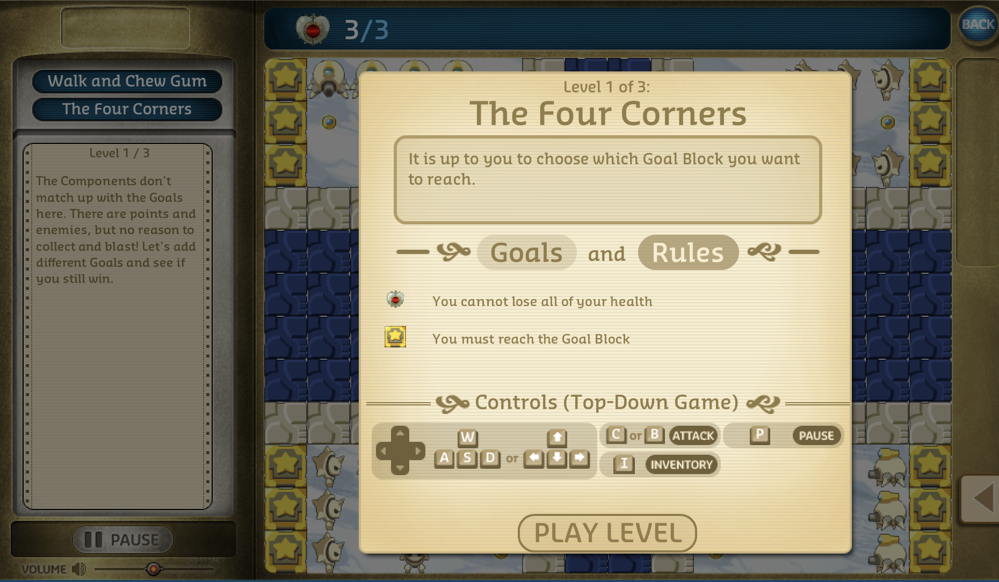
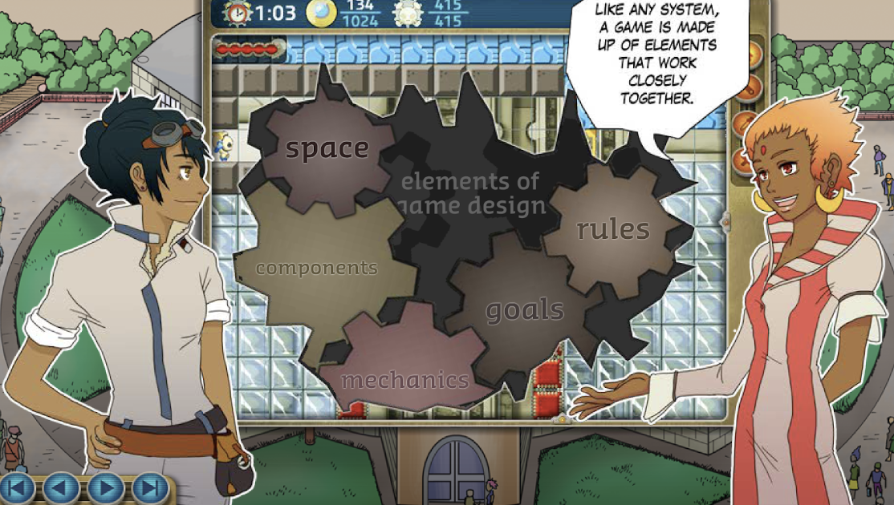
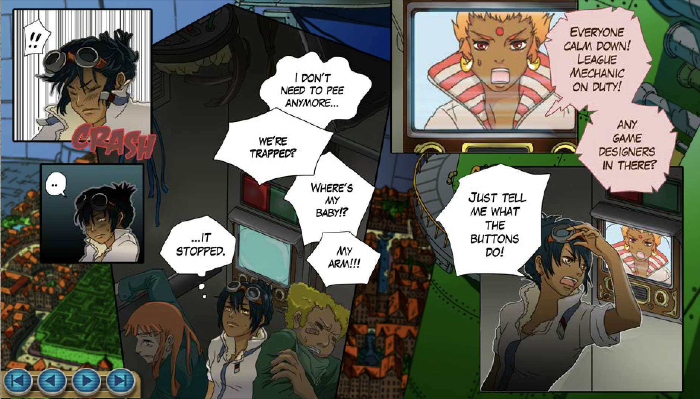
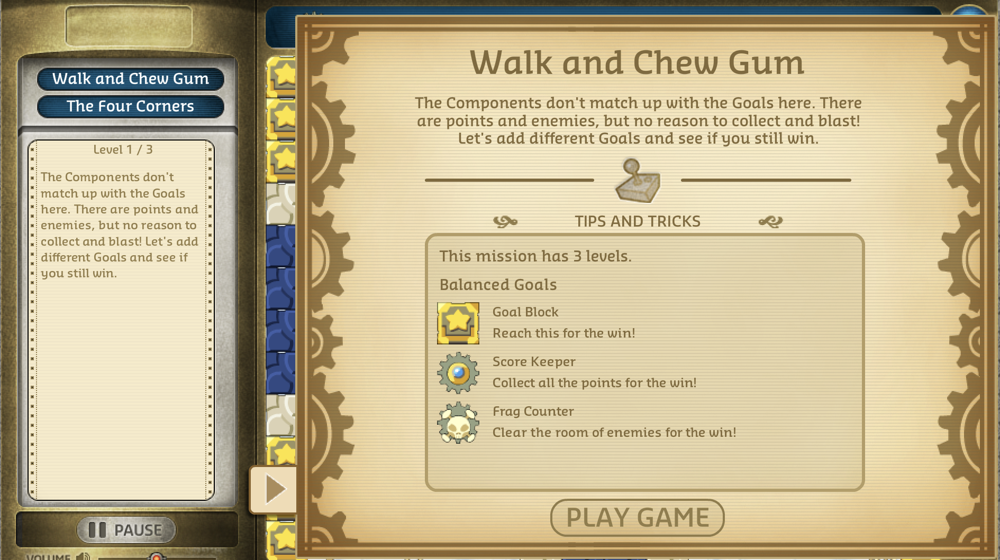

defining a serious game in context to Gamestar Mechanics
As a refresher to my last post, I created my own definition for a serious game:
A serious game is a game meant for education or for practice that imitates real-world scenarios in a entertaining, rule-based fashion while creating a rich field for a risk and active exploration of serious intellectual and social problems.
My definition still holds out to be strong. However, I want to add more elements to my definition. I recently watched a Ted talk by Robert Torres Ph.D, a former teacher and school principal and now a Senior Program Officer at the Bill and Melinda Gates Foundation. Torres helps to lead the Gates Foundation digital media and college readiness work. He served aa the Chief Research Officer at Institute of Play where he co-founded Quest to Learn, a games-based school in New York City. His research at Quest to Learn and on Gamestar Mechanic, a video game designed to support kids development of basic game skills, has focused on the potential game design and games-based environments have in supporting cognitive development. In his talk, Torress explains that 97% of kids play video games and 50% of those kids in ubran areas are dropping out of school. This statistic scared Torres into research about how he can fix this problem. Torress mentioned two things that stuck to me.
First, game mechanics govern our behavior in games. The way we are limited or supplied in games increases a sense of relevance because you know what you're doing because you're handed with tools to guide you and objectvie to achieve. This aspect is important in learning why you do the things you do. It makes learning meaningful, it makes games meaningful. This concept applied to the infamous line of, "I can't just sit around and listen in lecture, I need to do something!" Torres is saying that with games, we are able to create meaningful connection to the material we are learning because we have a hands-on approach when it comes to games.
Second, games require players to solve complex problems, sometimes life changing problems like discovering the protetin structure for AIDS. Games will engage students or any learners to solve problems they wouldn't have imagined to solve. It is an invitation to fail, succeed, try again, and repeat. On the topic of failing, suceeding, and trying. I read another article by researchers at the The Education Arcade at the Massachusetts Institute of Technology (MIT). Researchers explain that there are 5 freedoms that gamers experience (Klopfer, Osterweil, &Salen, 2009).
- Freedom to Fail
- Freedom to Experiment
- Freedom to Fashion Identities
- Freedom of Effort
- Freedom of Interpretation
I believe all games have these elements. When you try a new path or method to solve a problem, you are inviting failure, effort, and experimentation. When you join an Role-Playing game, you are choosing your online identity. When you play a game like Dungens and Dragons, you are inviting interpretations of how the games should be played or when you are solving a problem you are running through all possible interpretations of a problem to get the answer.
I want to go back to Torres' statsitic about 50% of students in urban communities that play video games drop out of school. Sometimes, it may be because traditional school spend too much time in classrooms and listening to lectures. Researchers at University of Genoa, in Genoa, Italy found that students can only remember 10 percent of what they read, but almost 90 percent, if they engage in the job themselves, even if only as a simulation (Bellotti,& Gloria, 2010). However, I also believe that education has a very broad spectrum and cannot be guaranteed by single tools. If the tool is just lecturing, then a student who succeeds in lectures cannot be compared to a student who does not succeed lectures. Serious games can provide an alternative to that.
As mentioned in previous blog, serious games can provide an environment for 21st century skills like collaboration, critical thinking skills, communication, community, and so much more. Sometimes students learn more in a game than in lecture.
Let's apply these concepts to my frist game review.
Critical Video Game Review
I played Gamestar Mechanics. GameStar Mechanic's bio is here:
" Gamestar Mechanic is a game and community designed to teach kids the principles of game design and systems thinking in a highly engaging environment. It is designed for 7- to 14-year-olds but is open to everyone. We've included features in Gamestar that make it useful for kids playing the game on their own or with family members at home, as well as in moderated and educational settings."
In my review I'll be looking at elements provided to me on this blog by author, KirbyKid.
- Pacing
- The pacing of the game was to your own pace. There is a story to the game that tries to encourage urgency. For instance, there was a part of the story where the character gets stuck on an elevator and the narrator says that they need to complete these games quickly to get out of the elevator. Although the narration is urgent, the game is not. You can fail the games as much as you like and you will fix the elevator as soon as your done. It is invited users to come to the game. It is not a game that you can finish in one sitting (unless you have time). It is a game meant to be played incrementally.
- Game Depth & Emergence & Balance
- The game complexsity speaks to the realm of game design and gets deep into the mechanics. At one point in the game and in the image below, Gamestar explains all the components that make up a good game or what should be considered when creating a game. In fact, all the levels and challeneges you go through in the game focus on one particular aspect. For instance, if you are working on timing, the game will give you the challenege to "fix" a game's timing so that it is playable. The interplay in Gamestar is if you succeed in completing a level, you get closer to beating the storyline (which is catching a criminal game designer). If you lose games, you can keep on trying until you get it. The counterpart of this game is that all mechanics that you learn about how a game should be designed come together when you are designing your own game as challenge. First, you must learn the foundation! Overall, the game depth and emergence is postitive because it invites interpretation, failure, experimentation, and effort.
-
Controls & Intuitive
- The controls in the game are straight forward and even give you instructions. Sometimes you will have a gun to defeat enemes or simply have the option to jump. The controls of this game are straight forward to increase the efficiency of gameplay.
Screenshot of Controls
- Story
- The story to this game is told very eloquently, it reminds me of an anime. There is dialogue, narration, and direction in each scene. I never feel lost and completely engaged. There are colors and clues. The text is in comic book format so you know to follow from the left of the screen to the right. It feels like I am reading a book. In addition, there are graphics that highlight urgency or motion in the story that help me stay engaged.
- Gameplay & Experience
- The gameplay of Gamestar Mechanics is smooth and has a lot of direction in detial. Whenever I have a question, I can find it. If I am stuck, I don't have to worry about restarting the whole game. When I want to read the storyline again, I can always go back. There are even hints to winning levels. I enjoy the beginning objectives provided because it gives me a chance to feel like I know what I am doing. My experience in the game gives me experience. As I mentioned before, the game is incremental so you learn a new skill as you reach a new level to ultimatelt become a game designer. It feels as if you are going through school or building the game yourself to ultimately start publishing your own games on the website. It is a very hands-on experience. Everything you do and learn matters because in the end you can show off your skills by building your own games.
Screenshot of Counterpoint
Screenshot of Storyline
Screenshot of Objectives
Overall, I feel like 'Gamestar' is an excellent game for the introduction of my Serious Games course. It reminded of concepts I've mentioned in previous posts and I can see children learning a lot. Until then...onto the next game!
Bellotti, F., Berta, R., & Gloria, A. D. (2010). Designing Effective Serious Games: Opportunities and Challenges for Research. International Journal of Emerging Technologies in Learning (IJET), 5(SI3). doi: 10.3991/ijet.v5s3.1500
Klopfer E, Osterweil S., and Salen K., (2009). Moving Learning Games Forward, Obstacles Opportunities & Openness, The Education Arcade, Massachusetts Institute of Technology.
[Tedx Talks]. (2011, November 9). TEDxGotham 2011- Robert Torres [Video File]. Retrieved from https://www.youtube.com/watch?v=ahYeJ5LmnXI&feature=youtu.be